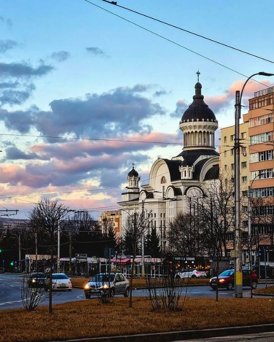
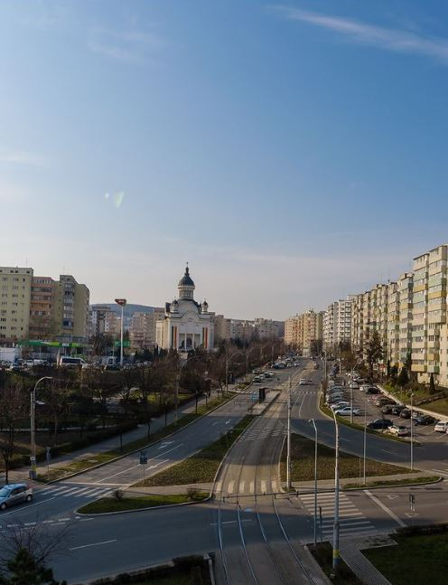
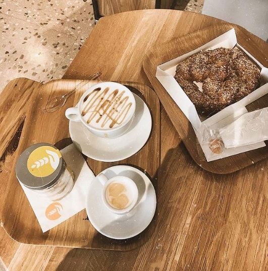
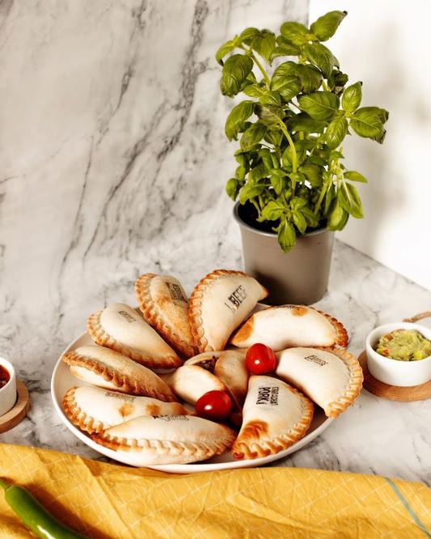
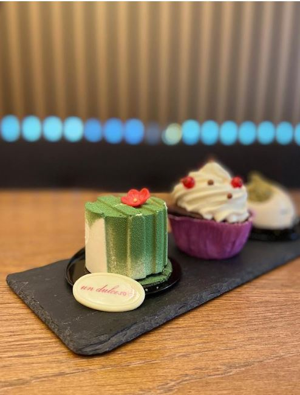
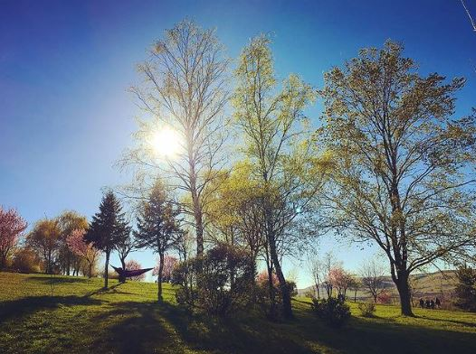
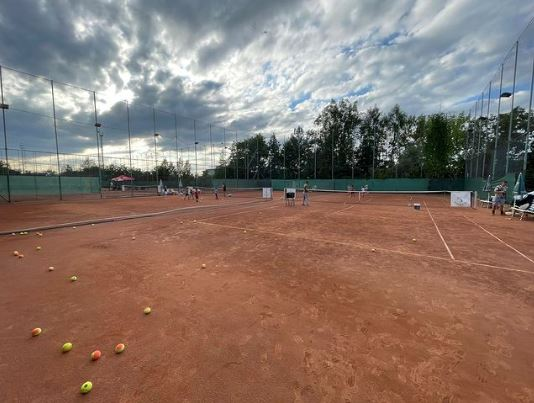
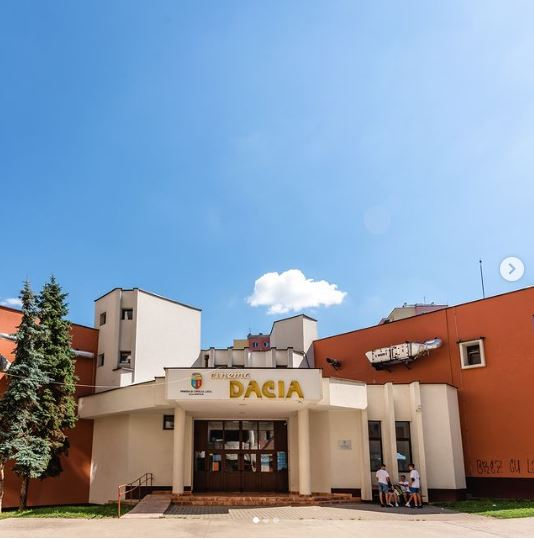

În această serie de articole ne propunem să vizităm cartierele importante ale Clujului și să le descoperim comorile. Un fel de Treasure Hunt am îndrăzni să îi spunem. Facem astfel o listă cu recomandări diverse, de la localuri cochete la parcuri mai puțin cunoscute, în care poți ieși să te relaxezi singur sau cu prietenii. Și, de ce nu, poate cu prima ocazie îți vei scoate și rudele sau amicii care vin să te viziteze la o escapadă… prin cartier ;).
Prima oprire am făcut-o în Gheorgheni, unul dintre cartierele noastre favorite din Cluj. Apoi, am mers mai departe până în Grigorescu, care ne-a surprins plăcut. Ulterior, am ajuns în Zorilor, un cartier în care ne-am tot întoarce. Acum a venit momentul să facem o oprire în Mănăștur și să vedem ce descoperim aici. Pentru că este cel mai mare cartier al Clujului care a fost, la început, un sat de sine stătător, am considerat, de această dată, că ar fi bine să facem o scurtă incursiune și în istoria sa. Așa, putem vedea cum a fost Mănăștur la începuturile sale și, treptat, cum a ajuns să fie astăzi. Așadar, hai să ne începem plimbarea (virtuală) prin Mănăștur, să-l privim cu mai multă curiozitate și să-l experimentăm.
Îți povesteam într-un material anterior, despre cartierele Clujului de ieri și de azi, că despre cartierul Mănăștur se prea poate să fi auzit menționându-se în liceu, la ora de istorie. Cel mai mare cartier al orașului Cluj-Napoca a fost, la început, un sat de sine stătător, astfel încât în majoritatea documentelor istorice apare drept Cluj-Mănăștur. Din 1895, acesta a fost arondat municipiului Cluj, devenind cartier al acestuia, așa cum este și astăzi. Numele de Mănăștur are o etimologie cel puțin interesantă, provenind din nemțescul Abtsdorf, care în traducere înseamnă Satul Abatelui. Denumirea i-a fost dată întrucât localitatea Mănăștur de pe vremuri a fost formată în jurul Abației Benedictiene Monasterium Beatae Mariae de Clus, din cadrul Bisericii Calvaria, cel mai vechi lăcaș de cult creștin din Cluj. Începuturile Bisericii Calvaria au prins contur în urmă cu aproape o mie de ani. „Calvaria” este o denumire neoficială a bisericii clujene, iar semnificațiile cuvântului nu sunt greu de intuit.
În vorbirea curentă, folosim cuvântul „calvar” pentru suferințe, dificultăți, încercări grele. În secolul al XVIII-lea, clădirea bisericii este transformată în depozit de armament, iar ulterior se dispune demolarea bisericii și a clădirilor din jur. Supraviețuiește doar altarul (transformat în capelă) și statuia Fecioarei Maria cu Iisus în brațe. Mai apoi, în secolele XIX-XX biserica este dăruită, pe rând, franciscanilor (în 1922) care o refuză, apoi Bisericii Greco-Catolice (în chirie), în timp ce Biserica Romano-Catolică rămâne proprietar. În perioada 1948-1990 interzicerea Bisericii Greco-Catolice după instaurarea regimului comunist face ca biserica să fie oferită Bisericii Ortodoxe Române. Între anii 1991-1994 Calvaria este folosită la comun atât de către Biserica Ortodoxă Română, cât și de către Biserica Romano-Catolică, iar după anul 1994, edificiul religios revine Bisericii Romano-Catolice. În anii recenți, Biserica Calvaria s-a bucurat chiar de lucrări de restaurare și reparații, datorită implicării preotului paroh Istvan Kadar, cu susținere financiară din partea autorităților locale și a enoriașilor clujeni.
Diferența calității dimineților este, în numeroase cazuri, făcută de cafeaua pe care o bei – iar cei de la Coffee Cup înțeleg asta. Ei mai știu și că rutina nu e aproape niciodată o soluție; de aceea schimbă constant originile, oferind o călătorie în lumea cafelei de specialitate cu fiecare degustare. Atunci când vrei să savurezi o astfel de cafea, pe ei îi găsești pe str. Câmpului, la nr. 9. Când vrei, în schimb, să bei o cafea rapid, pe drumul înspre următoarea ta destinație, poți face o oprire la Panemar, La Casa sau Pralina. Atunci când le treci pragul, nu uita să savurezi și unul dintre produsele lor de patiserie, așa cum e, spre exemplu, preferatul nostru marca Panemar: croissantul cu cremă de fistic.
Prima oprire (cu atât mai mult cu cât ești student și locuiești în Campusul Hașdeu) o facem la Big Belly. Amplasat pe Calea Mănăștur, la nr. 68, la ei găsești tot ceea ce îți dorești în materie de pizza, burgeri și deserturi. Un meniu ușor mai tradițional și care vă poate aduce aminte de copilăria petrecută la bunici găsiți la Restaurant Valachia, mai ales dacă mergeți la ei cu scopul de a testa, împreună cu prietenii, platourile tradiționale. Că tot vorbeam despre copilărie, puțin mai departe, în Piața Flora din Mănăștur te așteaptă și Căsuța Bunicii. Ei promit să te întâmpine cu produse tradiționale pregătite cu grijă și cu pricepere, așa cum se făceau cândva în zona Sălajului.
Îndepărtându-ne de bucătăria românească, ajungem în Complexul Flora, la Pizzeria Da Bobby, local unde noi credem că poți găsi cea mai bună pizza din Mănăștur, #petestate. Noi ne-am convins de asta prima dată când le-am trecut pragul și i-am cunoscut pe Bogdan și Adina, fondatorii pizzeriei Da Bobby. La Old Pub No. 2, pe str. Mehedinți, la nr. 82, te așteaptă pizza, paste, salate și, favoriții noștri, papanași. În funcție de cum ți-e norocul, s-ar putea să te surprindă cu oferta zilei și să te poți bucura de oricare două pizza la prețul de 40RON. Nu departe de Old Pub No. 2, tot pe str. Mehedinți dar la nr. 94, se află The Empanadas Factory, care servesc niște empanadas argentiniene delicioase.
Am mai recomandat cofetăria Un Dulce de la Vlad Mureșan de cel puțin câteva ori și o facem încă o dată. Aici, pasiunea pentru dulciuri a ajuns la un nou nivel de inovație, aducând în prim-plan gusturile copilăriei și nu numai. În momentele în care vrei să te îndulcești, pe ei îi găsești pe Strada Ion Meșter 12, unde te așteaptă cu bunătăți precum: clasica tartă cu mere, cannoli, Maracuja Tart cu fructul pasiunii și mousse de ciocolată umplut cu fistic. Nici dulciurile de la Cofetăria Chocodor, amplasată pe str. Bucegi, la nr. 5, nu se lasă mai prejos. Ceea ce ne încântă cel mai mult pe noi din meniul lor sunt, bineînțeles, delicioasele macarons cu diverse arome pe care le oferă. Tot pe str. Bucegi, la nr. 19, te așteaptă și Cofetăria „La Crème“ – de care ne-am îndrăgostit din prima. Din meniul lor recomandăm savarina, profiterolul cu lămâie și mousse-ul cu trei ciocolate.
Atunci când vine vorba despre plimbări în aer liber, locuitorii cartierului Mănăștur sunt norocoși să locuiască aproape de Parcul Colina. Pe lângă faptul că se întinde pe o suprafață destul de mare, deci nu te vei simți niciodată înghesuit dacă mergi aici, este și o zonă foarte liniștită, iar sunetul claxoanelor mașinilor parcă nu reușește să treacă de frunzele copacilor. Nici Parcul Mehedinți nu poate fi omis, căci este un spațiu propice pentru toate vârstele. Există un foișor pentru vârstnici, loc de fitness pentru cei care vor să facă sport, loc de joacă pentru copii, masă de ping-pong și pistă de role. Iar dacă e să vorbim despre Parcul Primăverii, vestea bună este că se planifică reamenajarea acestuia. Acesta va fi extins de la o suprafață de aproximativ 17.000 mp, la o suprafață de peste 21.000 mp. Se vor planta peste 400 de arbori noi, care vor consolida caracterul de spațiu verde. Se ia în calcul și realizarea unei zone umede, amenajată cu vegetație naturală specifică.
Pentru activități sportive, în Mănăștur te așteaptă, în primul rând, Baza Sportivă Unirea, care cuprinde 6 terenuri sintetice de minifotbal, 3 terenuri sintetice de fotbal cu piciorul, 2 terenuri de tenis de câmp și un teren sintetic dimensiuni 114×68 omologat liga a 3-a. Un teren sintetic de fotbal se găsește și în spatele Pieței Flora, pe strada Grigore Alexandrescu. Nu putem uita nici de OHSport, unde poți practica tot felul de activități sportive, precum: volei, tenis, handbal, baschet, badminton, fotbal și multe altele în sala funcțională mare de acolo, sau, alternativ, poți face exerciții în sala de gimnastică. În proces de construcție este o bază sportivă similară cu cea care se găsește în Gheorgheni, Baza Sportivă „La Terenuri”, care se preconizează că va fi finalizată la jumătatea anului 2022.
Amplasat în cartierul Mănăștur, pe str. Bucegi, la nr. 11, Cinema Dacia a fost construit în anul 1981 și cuprindea subsol, parter și un etaj. După 1989, în incinta cinematografului a funcționat o discotecă. Clujenii au fost martorii unui regres al cinema-ului care a fost scos din funcțiune timp de 15 ani. În anul 2016, autoritățile locale au definitivat modernizarea acestuia, iar acum este un centru artistic al cartierului Mănăștur, prin organizarea diverselor activități educaționale pentru copii, întâlniri ale cetățenilor și expoziții. Acum, își anunță săptămânal programul pe pagina de Facebook.
În aceeași idee dar în aer liber, La Terenuri – Spațiu Comun în Mănăștur este inițiativa-proces demarată de Asociația Colectiv A în 2012 ca o intervenție artistică în cartierul Mănăștur. La Terenuri este cel mai mare spațiu verde al Mănășturului, iar în ultimii ani clujenii au fost mereu alerți și au încercat să atragă atenția asupra locului. Tot aici au avut loc evenimente din cadrul Temps D’Images Cluj, Seri de Vară Clujene, Zilele Clujului și TIFF. Vestea bună e aici urmează să fie construită o bază sportivă despre care îți povesteam mai sus, care va arăta și va avea aceleași utilități ca cea din Gheorgheni – La Terenuri.
Biblioteca Județeană Octavian Goga – Filiala Traian Brad te așteaptă, în Mănăștur, pe str. Izlazului, la nr. 18. La sfârșitul anului 2017, filiala a intrat într-un proces de renovare. Redeschisă în 1 februarie 2018, filiala pune la dispoziția publicului spații noi, extinse și modernizate, un număr suplimentar de locuri destinate lecturii şi studiului în bibliotecă. Secţia pentru copii a fost dotată cu mobilier nou, cu titluri noi şi cu o varietate de jocuri şi jucării pentru cei mici. Adolescenții și adulții beneficiază de o sală multifuncțională, dotată cu 7 calculatoare, TV smart, playstation şi romane pentru tineri și locuri de lectură pe loc.
În 2018, Școala Gimnazială „Octavian Goga” din cartierul Mănăștur era prima școală din Cluj care primea o nouă înfățișare ca parte a proiectului „Artă în curtea școlii”, demers care a dus la realizarea a mai multor picturi murale pe pereții clădirilor din incinta școlii. Patru artiști stradali din România, Kero Zen&Ocu, Lost.Optics, IRLO și un invitat internațional (Waone Interesni Kazki) au pictat atunci pereții școlii, având ca temă de inspirație jocul și universul copilăriei. Așa, au rezultat următoarele picturi murale care pot fi văzute astăzi în curtea școlii:
Una dintre piețele din cartierului Mănăștur este Piața Agroalimentară Ion Meșter, amplasată pe str. Ion Meșter, la nr. 5, este „un muzeu viu al anilor ’90”. Aici te așteaptă mici negustori atât în halele interioare, cât și în cele exterioare, precum și în magazinele de covoare-perdele, mezeluri și alte produse amplasate în incinta pieței. Atmosfera este similară și în Piața Agroalimentară Flora, care se află pe Aleea Padin, la nr. 21. Aici găsești legume și fructe proaspete, mezeluri, lactate, produse fitofarmaceutice, citrice și flori de la 72 de producători agricoli și 31 de societăți comerciale și persoane fizice autorizate. Iar dacă și pe tine te încântă ideea de „piețe volante”, ne bucurăm să te anunțăm că anual, în perioada sărbătorilor de Paște, în Mănăștur se organizează piața volantă „Produs de Cluj”. Piața este încărcată cu o varietate de produse, de la alimente, precum carne, brânzeturi, lactate, uleiuri, legume și fructe proaspete, până la haine de piele și accesorii.
Cu o gamă variată de produse naturiste, farmacia Myriam, localizată pe str. Ion Meșter, la nr. 5, s-a dezvoltat și în mediul online punând la dispoziția clienților suplimente naturale, alimente și produse dietetice, produse de îngrijire personală și multe altele destinate tuturor categoriilor de vârstă. Aici poți găsi produse de la diverse branduri specializate în domeniu cum ar fi Prisaca Transilvania, Sano Vita, Solaris, Nera Comercial, Petras Bio. Deci, la farmacia Myriam te așteaptă de la mirodenii până la soluții de curățat casa. Așa că, dacă regimul îți impune anumite limite, cu siguranță vei găsi lucrurile de care ai nevoie atât online, cât și în magazinul fizic.
Știi deja că în ultima perioadă ne preocupă tot mai mult și mai des subiectul reciclării în Cluj. În cartierul Mănăștur, în zona Pieței Flora despre care am povestit mai sus, poți găsi amplasată una dintre stațiile Sigurec Public. Mai exact, ea se află pe str. Bucium, în vecinătatea autobazei CTP. Aici se pot recicla sticle de plastic până în 3l și doze de aluminiu. După introducerea deșeurilor în stații, utilizatorii vor primi un tichet eliberat de aparat. Pe baza acestui tichet, vor beneficia de reduceri în magazinele partenere ale proiectului. O a doua astfel de stație poate fi găsită în cartierul Zorilor, la intrarea în Piața Zorilor. Acest proiect a fost realizat în parteneriat cu Green Group și a avut la bază nevoia de a-i face pe oamenii din cartiere mai conștienți de colectarea selectivă, pentru protecția mediului. Mai multe despre inițiative sustenabile povestim periodic aici.
Până data viitoare când ne dăm întâlnire în alt cartier, tu ce alte zone mai puțin cunoscute din Mănăștur dorești să împărtășești cu noi? De la parcuri, piețe, ziduri colorate sau cafenele, așteptăm cu interes părerea ta, iar noi o vom face cunoscută.
La început a fost… nimeni și nimic care să ne vorbească despre viața orașului, despre ce se întâmplă în materie de evenimente și localuri pe plan local, niciun motiv care să ne scoată din casă.
Everyday we’re clujlife(ing). Ieșim din casă, vedem ce se întâmplă, ce mai e nou, ce mai zice lumea, ce-ar mai fi interesant de făcut, și apoi îți povestim și ție. Facem asta din Ianuarie 2008. Prezența aceasta îndelungată ne-a adus destule cunoștințe și curaj încât să abordăm subiecte pe care nu le ”atinge” nimeni. Avem informații pe care nu le găsești în altă parte și acces la mulți oameni din varii domenii.